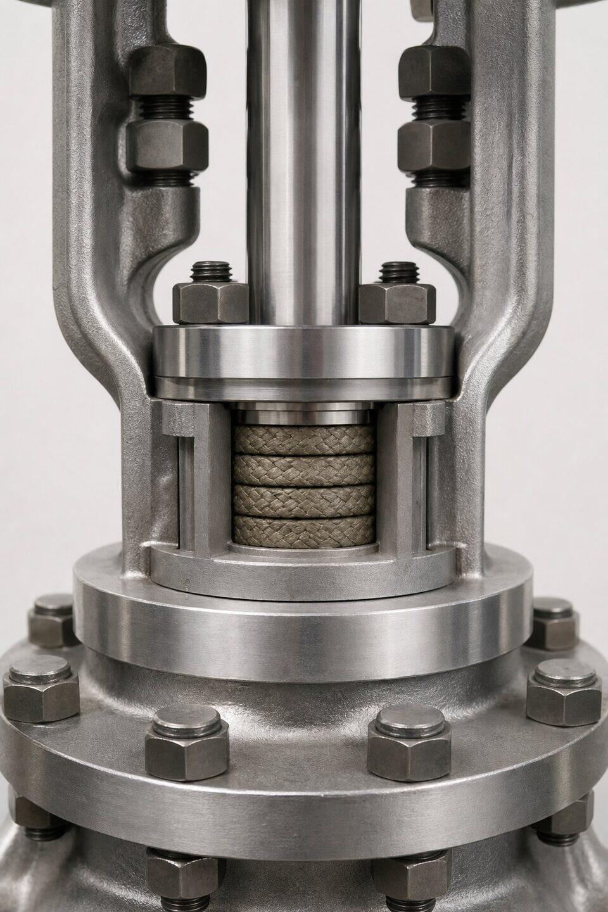

دو منشا اصلی نشتی
آببندی شیر در دو نقطه اتفاق میافتد: نشیمنگاه (بین دیسک و بدنه در وضعیت بسته) و ساقه (محل عبور محور از بدنه). کنترل هر دو برای یک شیر بدون نشتی ضروری است و هر یک فناوری و متریال خود را دارد.

نشیمنگاه و کلاس نشتی
| نوع نشیمنگاه | مزیت | محدودیت |
|---|---|---|
| نرم (پلیمری) | آببندی عالی در دمای متوسط | محدودیت دما و سایش |
| فلز-به-فلز | تحمل دمای بالا و سایش | نشتی بیشتر از نرم |
| ترکیبی | تعادل بین دو | بسته به طراحی |
کلاس نشتی مطلوب باید در سفارش ذکر شود و مبنای تست تحویل قرار گیرد.
آببندی ساقه
- پکینگهای نرم برای سرویسهای عمومی.
- پکینگ گرافیتی برای دمای بالا.
- کنترل گشتاور گلند برای فشردگی مناسب.
- بلوز برای سرویسهای بسیار حساس و فرار.
- بازرسی دورهای ساقه در نگهداری.
طراحی فایرسیف
در سرویسهای هیدروکربنی، آتشسوزی میتواند اجزای نرم را از بین ببرد. طراحی فایرسیف با نشیمنگاه دوم فلزی، پس از ذوب شدن اجزای نرم نیز آببندی قابل قبولی فراهم میکند. الزام آن را مشخصه پروژه و استاندارد تست آتش تعیین میکند.
عیبیابی نشتی رایج
- نشتی از نشیمنگاه: کنترل آسیب سطح، ذرات جامد و کلاس نشتی.
- نشتی از ساقه: تنظیم یا تعویض پکینگ.
- نشتی از فلنج اتصال: گشتاور و گسکت.
- نشتی مداوم: ارزیابی تعویض شیر یا تعمیر اساسی.
مروری بر کلاسهای نشتی
| سطح | توصیف | کاربرد |
|---|---|---|
| عمومی | نشتی مجاز بیشتر | سرویسهای غیرحساس |
| متوسط | نشتی محدود | رایج فرایندی |
| سختگیرانه | نشتی بسیار کم | سیالات فرار و حساس |
| بسیار سختگیرانه | نزدیک به صفر | سرویسهای خاص |
معیارهای دقیق هر سطح در مرجع تست مربوطه تعریف شده و باید در سفارش به آن ارجاع شود.
نگهداری آببندی
- بازرسی دورهای نشتی ساقه و ثبت مشاهدات.
- تنظیم گشتاور گلند در حد توصیهشده؛ نه بیشتر.
- تعویض پکینگ پیش از نشتی کامل در سرویسهای حساس.
- کنترل سلامت نشیمنگاه در اورهالها.
در پروژههایی که نشت فرار اهمیت زیستمحیطی یا ایمنی دارد، الزامات آببندی ساقه سختگیرانهتری تعریف میشود و باید در سفارش به مرجع مربوطه ارجاع داده شود. این الزامات معمولاً شامل پکینگ ویژه، طراحی گلند و در برخی موارد بلوز است.
نتیجه عملی برای خرید: هیچ شیری بدون ذکر الزامات آببندی سفارش ندهید؛ کلاس نشتی نشیمنگاه و نوع پکینگ ساقه باید در هر استعلام ذکر شود.
مستندات و معیارهای پذیرش تستهای نشتی
بحث آببندی شیر بدون معیارهای پذیرش مشخص و مستندات مناسب، به مذاکرهای بیپایان بین خریدار و سازنده تبدیل میشود؛ بنابراین قبل از هر استعلامی، باید مشخص باشد که نشتی مجاز چگونه اندازهگیری و با چه معیاری قضاوت میشود. برای تست بدنه، معیار معمولا عدم وجود نشتی مرئی یا افت فشار در مدت زمان مشخص است و این تست، سلامت بدنه و اتصالات اصلی را تایید میکند. برای تست نشیمن، کلاس نشتی تعیینکننده است؛ هر کلاس، میزان نشت مجاز را با روش مشخصی تعریف میکند و باید در برگه مشخصات، هم کلاس و هم استاندارد مرجع ذکر شود. یک نکته ظریف وجود دارد: کلاس نشتی بالاتر، همیشه بهتر نیست؛ رسیدن به کلاسهای سختگیرانه معمولا هزینه ساخت را بالا میبرد و در برخی کاربردها، کلاس متوسط با هزینه مناسب، پاسخگوی واقعی نیاز است. انتخاب کلاس باید بر اساس پیامد نشتی انجام شود: در سرویسهای سمی، قابل اشتعال یا پرفشار، کلاس بالاتر توجیه دارد و در سرویسهای عمومی، کلاسهای رایج کافیاند. در مستندات، گواهی آزمون کارخانه باید روش تست، محیط تست، فشار، مدت زمان و نتیجه را نشان دهد و در صورت استفاده از تست شخص ثالث، گزارش آن ضمیمه باشد. در تحویل، اگر امکان تست مجدد در سایت وجود دارد، شرایط و معیارهای آن باید از ابتدا توافق شده باشد، چون تکرار تست با شرایط متفاوت میتواند نتایج متفاوتی تولید کند. نکته مهم دیگر، شرایط تست در وضعیت حمل است؛ برخی تستها در وضعیت نیمهباز یا بسته خاصی انجام میشوند و اگر شیر در حمل آسیب دیده باشد، نتیجه تست تحویل میتواند با تست کارخانه متفاوت باشد. در نهایت، اگر سرویس شما الزامات خاصی مانند فایرسیف دارد، تایید آن باید از طریق آزمونهای استاندارد و با مدارک معتبر باشد، نه صرفا ادعای سازنده؛ مستندات آزمون، تنها مرجع قابل دفاع در زمان اختلاف یا بروز حادثه است.
جمعبندی
آببندی خوب، نتیجه انتخاب درست نشیمنگاه، پکینگ و کلاس نشتی متناسب با سرویس است. این سه را در سفارش مشخص کنید و در تست تحویل کنترل نمایید.
سوالات رایج
کلاس نشتی نشیمنگاه چیست؟
طبقهبندی میزان نشتی مجاز شیر در وضعیت بسته است؛ از کلاسهای عمومی تا کلاسهای بسیار سختگیرانه با نشتی نزدیک به صفر. انتخاب کلاس به حساسیت سرویس بستگی دارد.
نشیمنگاه نرم بهتر است یا فلز-به-فلز؟
نشیمنگاه نرم آببندی بهتری در دماهای متوسط میدهد؛ فلز-به-فلز برای دمای بالا و سرویسهای ساینده لازم است. انتخاب تابع دما، سیال و الزام نشتی است.
منشا رایج نشتی از ساقه چیست؟
فرسودگی یا فشردگی بیش از حد پکینگ. پکینگ باید متناسب با سیال و دما انتخاب و گشتاور گلند آن کنترل شود؛ در سرویسهای بسیار حساس از بلوز استفاده میشود.
طراحی فایرسیف چه کمکی میکند؟
در آتشسوزی، اجزای نرم از بین میروند؛ طراحی فایرسیف تضمین میکند شیر پس از آتشسوزی نیز آببندی قابل قبولی داشته باشد. در سرویسهای هیدروکربنی معمولاً الزامی است.
مطالب مرتبط
- مقایسه کلاسهای نشتی شیرآلات
- مواد نشیمنگاه در شیرآلات
- راهنمای تست آتش (فایر تست) شیرآلات
- راهنمای جامع شیر توپی
- راهنمای تست و معیارهای نشتی شیرآلات
با ذکر کلاس نشتی مطلوب، متریال نشیمنگاه و شرایط سرویس، شیر مناسب به همراه مدارک تست عرضه میشود.
مشاهده صفحه محصول ← ثبت RFQ همین محصولتامین این تجهیزات را به پیشرو تجهیز فرتاک بسپارید
شرکت پیشرو تجهیز فرتاک تامینکننده تخصصی تجهیزات صنعتی برای پروژههای نفت، گاز، پتروشیمی، فولاد و نیروگاهی است. برای دریافت پیشنهاد فنی و قیمت، استعلام (RFQ) خود را ثبت کنید تا کارشناسان مهندسی فروش در کوتاهترین زمان پاسخ دهند.
- تامین شیرآلات صنعتیخانواده کامل شیر با گواهی مواد و تست
- تامین تجهیزات پایپینگقطعات یدکی و پکینگ متناسب